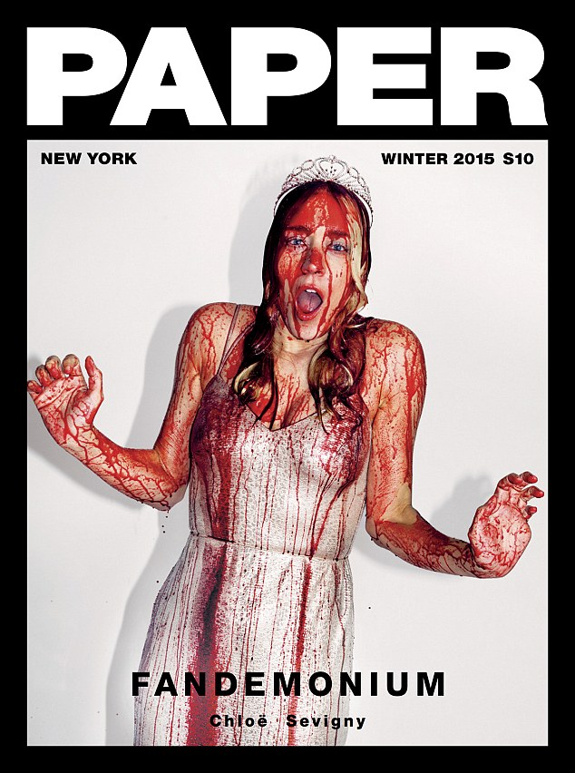

Since Paper Magazine launched out of New York City in 1984, the journalism world has changed. Instead of being solely a print publication, now the magazine gains more traction through it's website. Paper Magazine is an ideal example of the innovative future for journalistic design.
The future of design for journalists is a vast, and windy road. A road with flowers growing on its sides, and mobile versions of those flowers, too. I think that as coding and graphic design becomes more simple and a talent that many journalists learn to possess, publications websites will become more tangible, more physical looking, more authentic, and more personal.
My problem with online publications or literary websites is the lack of physicality. No page to turn or hold in your hand, perhaps too many distracting colors and shapes and moving GIFs and videos... In the future, websites will embody more of the 'glossiness' or physical qulaity that magazines and books do. I think there will be the incorporation of textures, perhaps a website with a background of jean, but the jean is very realistic, popping out of the page.
Textures, tangibility... There's a certain degree of separation, in my opinion, between a person in front of a screen and the content showing on the screen. That separation could be lessened by design that looks hand made, rather than coded, while staying simple, of course.
Since each day we are developing technology that allows us to create design layouts that are different from the day before, we have become too wrapped up in distractions. In the future I think that there will be less unwanted movement on the page... Spunky, colorful, simple. Not too many things on one page. Uniformity and authenticity.
As well, currently, print and online publications are split into categories: fashion, art, news, film, music... Down the road, there will be less of this categorization. Like Paper, which includes many different aspects of art and culture, there will be more publications that include not only one type of content. The most attractive kind of design is real design. Honesty and authenticity, the real is the most attractive.